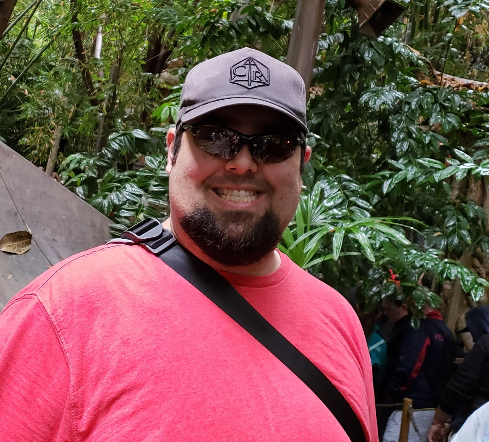

About Me

My name is Brian Allen. I have always loved the creative side of things. I have always enjoyed being able to creatively express myself through various projects, from writing leadership programs for youth at Rocky Point Haunted House, writing and directing interactive murder mysteries at the Castle of Chaos, and creating and running multiple tabletop gaming groups through epic adventures in Dungeons & Dragons. I really enjoy being able to tell stories, and see the outcome and impact I can have on others.
I live in Salt Lake City, Utah, with my lovely wife and a number of pets. I love the variety of unique biomes here in Utah, as well as getting to explore the varied and unique places of this state. I love being able to hike in a high-elevation alpine forest in the north, explore the red rock canyons and arches in the south, and getting to see the unique and varied wonders of nature our many National Parks have to offer.
I love to play all types of games, from board and card games, to puzzles to roleplaying games. I am currently running two different D&D campaigns for different groups of people. I really enjoy getting to create unique worlds and tell collaberative stories with my friends. These have led to some amazing memories and a unique view on solving problems I never knew I possesed. I love technology and video games, and have been playing them since I was old enough to hold a controller or put a quarter into an arcade cabinet. I love the ability to explore different sides of yourself as well as getting to experience things you could never do in real life.
I would love to get the chance to you help you with creating a unique project to help you create something from your imagination! I hope to hear from you soon and I can't wait to help you with your next project!